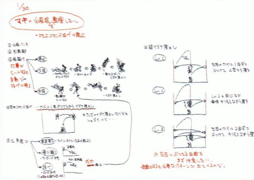

Representative Works: Street Fighter Alpha series, Capcom vs. SNK series, etc.
Role: Director
Favorite Character: Haohmaru
HIDETOSHI ISHIZAWA
Planner
Development Division 1
Representative Works: Street Fighter Alpha 2, Vampire Savior, Street Fighter III series, Capcom vs. SNK series, etc.
Role: Main Planner, Schedule Management, etc.
Favorite Character: Ryuhaku Todoh
TAKESHI TANIGUCHI
Planner
Development Division 1
Representative Works: Power Stone 2, Project Justice, Capcom vs. SNK series, etc.
Role: System and Character Balance
Favorite Character: Terry Bogard
RYOUTA SUZUKI
Planner
Development Division 1
Representative Works: Marvel vs. Capcom 2, Vampire Chronicle (DC), Project Justice, Capcom vs. SNK series, etc.
Role: Character Balance
Favorite Character: Geese Howard
HOW DID CONCEPTS LIKE GROOVES END UP BEING FORMED?
ITSUNO: It started with me saying "let's make Original Grooves next!". So it would be Capcom Groove, SNK Groove, and then each game's Original Groove. If we could have every character be able to use them, it would be so cool! We looked at some of the things people had been hoping for, like "I wanna see a Rage Explosion Shin Shoryuken!", and that ended up being a component of our planning.
ISHIZAWA: Fundamentally, those kind of player opinions were a key component of the design. We got a lot of letters from fans of the first game saying "let us parry!", so we tried to integrate those requests the best we could.
ITSUNO: On the topic of parrying, we had some real parrying fiends at the Tokyo location test. People were starting to say "P-Groove is too good!".
ISHIZAWA: Street Fighter III wasn't a "Turbo" game, while CvS2 is. Accordingly, the timing window for parrying is smaller, which should make it exceedingly difficult. So if people manage to pull it off and feel like it's a dominant technique, I consider that to be their victory.
HOW DID YOU SELECT THE GAME'S CAST?
ITSUNO: We took a number of factors into account when "balancing" the character selection; a sense of variety, special moves, playstyle, original series... But we had pretty much decided this game's characters before we even released the first game. Development on Eagle and Haohmaru was already underway. And then the first pick after that was Maki. There was actually some discussion about having it just look like Maki, but giving her all of Linn Kurosawa's moves (laughs).
SUZUKI: Simply put, we all wanted Linn Kurosawa in the game. But it was just impossible due to copyright. So in the end, we just went ahead with Final Fight 2's Maki instead.
ITSUNO: At the very least, we wanted to avoid "who even is this character?" type reactions. Some people wanted to add Rain from Plasma Sword, but we thought picks like that would be too niche. We wanted even people who exclusively play SNK games to see the new Capcom characters and go "oh yeah, I've seen this character before". And for people who only play Capcom games to see the new SNK picks and go "oh, they're from that game". Recognition was important for us.
ISHIZAWA: But Eagle and Ryuhaku Todoh were real curveballs! (laughs)
DID EVERYONE ON THE TEAM CONTRIBUTE IDEAS FOR CHARACTERS' PRE AND POST MATCH ANIMATIONS?
ISHIZAWA: A lot of them were just made independently by the folks who handled sprite art. We tried to simply give them advice rather than outright reject anything. We ended up with some pretty unexpected character interactions. Like for Joe Higashi vs. Mai Shiranui. That one only came about because the people in charge of Joe and Mai hit it off and wanted to do it together. You could call it "love".
ITSUNO: It was hard for us to say "no" to something that was already made, so it was essentially first come first served. All the sprite artists understood that. So as long as what they made was fun and interesting, they would be granted forgiveness rather than permission (laughs). But that's all a part of the "love", and led to some solid results.

(Just by looking at these notes, you can tell that even a single special move is packed with detail and consideration by the staff. The Maki one in particular really lets you feel that "love".)
ARE YOU ALL GOING TO PLAY THE ARCADE VERSION?
ISHIZAWA: Taniguchi and Suzuki are pretty hardcore arcade gamers. Some people might know them as Baba Demi and Oni Bisha (laughs). They were scouted by Producer Funamizu at a certain event, and have become full-fledged bigwigs on the team.
SUZUKI: For me, fighting games are something that's specifically fun because it's an arcade game. Because you're playing against opponents you don't know. The home version does have online play, but I just find the arcade more appealing. There's this unique atmosphere there, like you're at some kind of event. And you can meet new friends.
Taniguchi: This might seem obvious, but we try to hide the fact that we're Capcom staff when we're at the arcade. I dress like any old player and try to act nonchalant, and then I'll go in hard on the machine (laughs). Though I don't use stuff I studied during development myself like Custom Combos. But when the time is right I'll lift the ban on it.
ISHIZAWA: Taniguchi is probably the best Custom Combo user in all of Japan right now. But it would seem pretty suspect for him to bring out some crazy technique while players are still trying to get a handle on the game. It would ruin the spirit of research and discovery. And speaking of research, Taniguchi and Suzuki really went all out in combing over this game. They were making balance changes right up to the very end. They would do nothing but argue about even the finest details. Right up to the very end...
TANIGUCHI: Stuff like whether to add one frame of landing recovery to the Shoryuken. We'd have conflicting opinions and would refuse to back down. Every day was full of argument.
SUZUKI: Or, say, whether to make Iori's crouching medium kick cancellable...
TANIGUCHI: Absolutely not!!! (laughs)
SOUNDS LIKE YOU TOILED QUITE A BIT OVER BALANCE ADJUSTMENT.
ITSUNO: From the moment we settled on the game mechanics, we could tell we wouldn't be able to make it a balanced game. So we leaned towards a balancing policy of "just do what you can". And sure enough, Funamizu told us "Let's go for a less smooth balance. Prioritize fun over perfectly balancing everything". What we paid most attention to wasn't "which character is the strongest and which is the weakest", but rather a combination of "this character is good with this Groove" or "this character is strong at this Ratio". That's also when we decided on our policy of "if you're not sure what to do, just go for it!". That's how it was with Just Defend restoring life, or C-Groove's Level 2 Super cancels. If you're not sure about it, just do it.
SUZUKI: Same goes for S-Groove's Counter Attack. Originally it was just evasion. Also, A-Groove's Custom Combos would have you move forward automatically.
ITSUNO: At the Osaka location test, we had both a version like Alpha 2's Custom Combos that moved you forward automatically, and one that didn't.
We also had two versions of the character select, with one where the cursor moved from character to character one space at a time, and then the one where the cursor can move freely around the screen that you see today.
Well, when it came to the mechanics, the planning, and the balancing, we really saw it all the way through. There's nothing left on the table. We're really proud of this one!
ISHIZAWA: There's really not much left to do from a mechanics standpoint. You could always add more Grooves, but when we're talking "Capcom vs. SNK", I don't think there's much need for any more. As a fighting game planner, I've always been very systems-focused. So when I try to consider how to make a game that resonates with the players, I always go back to mechanics. And for me, CvS2 is the answer to that question. So it's not like there aren't more ideas, or that we truly used up absolutely everything we have. But we saw it through to a stopping point. If that doesn't satisfy us, I don't know what will. We're looking forward to hearing everyone's impressions.